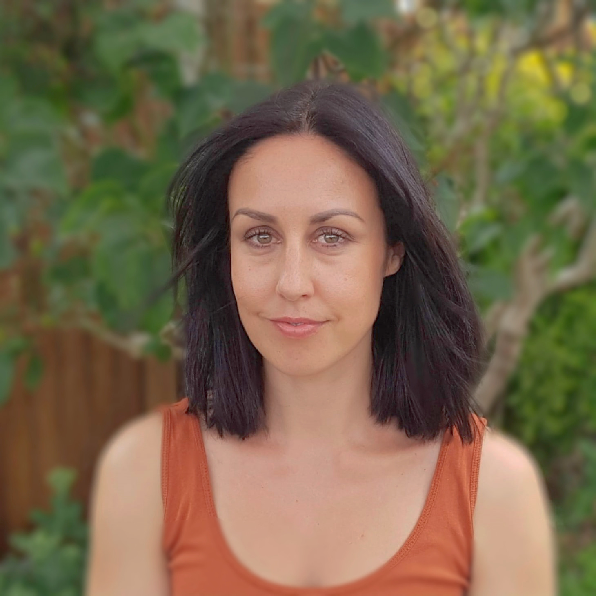

Leonie Holmes (MBACP)
Integrative Counsellor
Online counselling in Colchester and surrounding areas

Online counselling in Colchester and surrounding areas
Are you going through every week carrying a silent pain that you wish the people around you could understand? Do you try so hard to stay positive, juggle everything and make sure the world around you thinks you’re coping ok. Is the reality actually, that you are trying so hard to fight back the tears each day. But in fact, you feel alone and don’t want to burden anyone.
Do you see the same unhealthy relationship patterns unravel year upon year? Maybe you are trapped in addiction, self harm or self destructive behavior. Do you look for any way to escape those painful feelings? Are you reactive and angry with your partner but baffled as to how the conflict starts?
Do you feel anxious, panicked, sad, exhausted, lonely and unable to concentrate at work?
Would you like a safe space to explore these feelings? To look at how you’re past may be affecting your present? Are you just sick and tired of feeling so unhappy and long for a different journey? I would like to help you with this.
I listen, empathize and gently try to understand what it feels like to be you. I will help you to explore your issues but never push you to talk about things that you are not ready for. I can’t promise to fix you or instantly take away your pain, but I will help you to put the pieces of your jigsaw together and begin the path to healing and happiness. I am a warm, relatable person and my style of therapy is collaborative so I won’t just sit in silence. I will gently challenge and help you to explore your thoughts and feelings in a non judgmental safe way.
If you think you would like therapy with me, then please send a text, email or give me a call. I understand committing to therapy takes courage, so I offer a free 15 min phone consultation in which you can give me a brief outline of why you would like counselling and ask any questions that you might have.
Would you like to get some clarity on why you feel the way you do, understand yourself better and begin a path to healing and happiness?
I am a fully qualified integrative counsellor based in Colchester and registered with the British Association of Counselling and Psychotherapy which means I abide by their code of ethics. I have monthly clinical supervision with an experienced accredited supervisor. I also hold full insurance, an up to date DBS certificate and am registered with the ICO.
Through my own personal challenges and struggles I embarked on a counselling journey which became life changing. I found a new way to process emotions, manage past trauma and realized life didn’t have to feel quite so hard every day. I became passionate about helping people with their personal challenges and the power of talking therapies.
So often in life we try to do everything by ourselves, we feel we must be strong or take a positive approach, that we can’t burden others with our problems. All these limitations and pressures we put upon ourselves only serve to make us feel more isolated and powerless. Even when we are at our rock bottom, we can still feel so ashamed and worried of asking for help, and when we do, we don’t always get the response we really need or deserve.
Counselling gave me the safe space to take those first steps to heal and find a new way of living. I hope it can for you too.
When we speak I hope to create an environment in which you feel you are in a safe space to be listened to, understood and accepted for exactly the person you are.
"People only seriously consider change when they feel accepted for exactly who they are." - Carl Rogers
I have a BACP accredited diploma in Integrative counselling.
I also have a fine Art degree and am very encouraging of clients who like to work creatively or express their emotions through creative work.
I regularly undertake continuing professional development as required by the BACP with a special interest in Child hood trauma, Complex PTSD, Addiction and Narcissistic abuse.
As an integrative counsellor I essentially work from a ‘tool box’ of different therapy approaches which I tailor to your needs and personality. These include psychodynamic theory, transactional analysis, person centered therapy, cognitive behavioral therapy, Gestalt, and some creative work. If you would like any extra information about Integrative counselling I would be happy to send you some via email.
Clients are often surprised when they find counselling is a lot more relaxed than they first thought. In our first session you will decide at the end if you want to work with me. I will be gentle, kind and thoughtful in my approach, and really try to understand what it feels like to be you. I remember what the first counselling session is like and how nerve wracking it can be, therefore I will do my absolute best to help you feel relaxed and comfortable.
I currently work on the team at Life-Force centre for counselling in which I counsel adults only. I provide telephone counselling and video using either zoom or whatsapp video. Please see services.
I have experience working with childhood trauma, physical, emotional and sexual abuse, addictions, domestic abuse, suicidal thoughts, toxic relationships, birth and pregnancy issues, Depression and anxiety, sexual issues, stress, and PTSD.
I currently offer 50 minute weekly secure and confidential telephone and video counselling sessions in addition to in-person sessions
There are many benefits including:
I practice from Life-Force center in Colchester on a Tuesday and Thursday every week. Please enquire for the most up to date Covid 19 policy.
After deciding you want to work with me, we would have the session at the same time every week. The work is ongoing with an open ended contract unless you require something different, but we would review regularly to check you are happy and comfortable with everything.
I have a cancellation policy of 72 hours. Therefore if notice is given after this period of time, I would require the full session fee. I take holiday breaks throughout the year, mostly at Christmas, summer and Easter and always give you lots of warning regarding dates.
I require payment via bank transfer prior to the session.
| Telephone and video sessions | £35 |
|---|---|
| In person sessions | £35 |